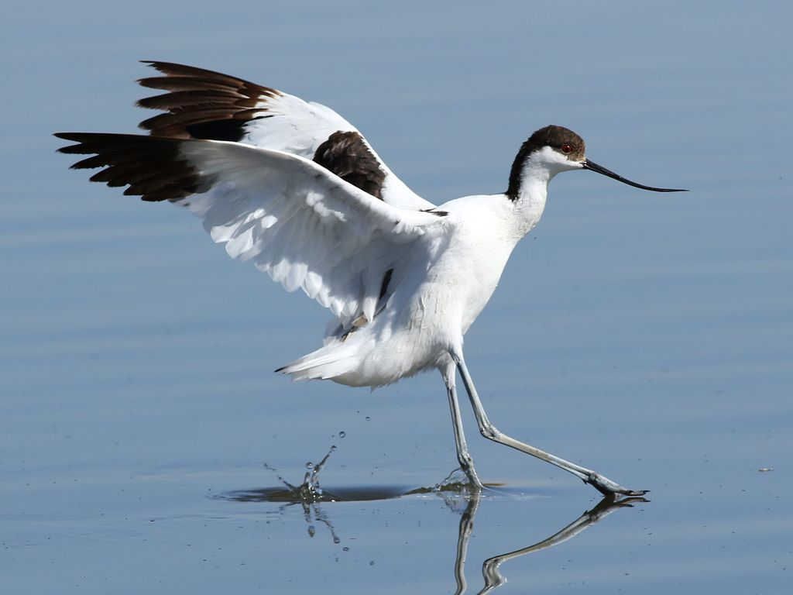

Avocetė (lot. Recurvirostra avosetta, angl. Pied Avocet, vok. Säbelschnäbler) - avocetinių (lot. Recurvirostridae) šeimos grakštus paukštis, maždaug karvelio dydžio, turintis būdingą į viršų kiek riestą snapą. Į Lietuvos raudonąją knygą rūšis įrašyta nuo 2000 metų.
Snape yra jautrių jutimo organų, todėl paukštis gali maitintis vandens bestuburiais net jų nematydamas. Vyrauja balta ir juoda spalvos. Kojos ilgos, melsvos. Lietuvoje avocetė pradėjo perėti vos prieš dešimtmetį ir tik pajūrio zonoje. Anksčiau buvo pastebima tik traukimo metu.
